Kathryn — Abercrombie Petite Dresses
June 6, 2026 · A&F's dedicated petite-dress collection (40 styles), screened hard. The brand skews young/thin — half the catalog is strapless / halter / slip / smocked / knit / skort, all apple-shape SKIPs — but a real seam of structured "dipped waist" and square/V-neck wovens survives. Source: Abercrombie & Fitch (✓ via bfetch).
STRONG — 2

Poplin fit-and-flare with a SQUARE neckline (top green light), seamed skirt and a defined 'dipped' waist seam — verified not a drop waist. Multiple green lights in structured cotton.
blue stripe
View item →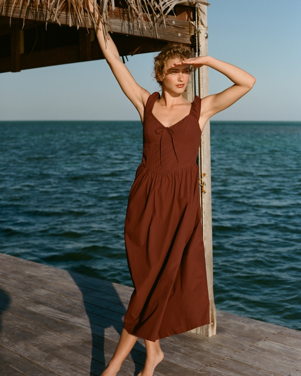
Classic poplin, ruching at the bodice, tie-front and a defined dipped waist (verified). Sweetheart neckline is the one caveat for a C cup — the cap sleeve adds structure.
port red — warm, flatters
View item →GOOD — 9
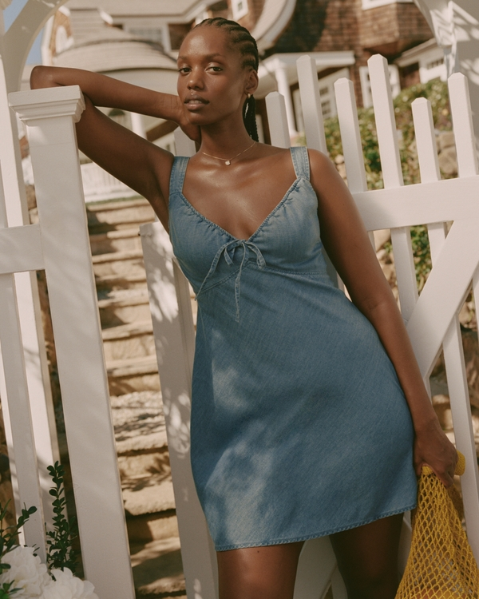
Structured chambray, slim-fit with a ruched sweetheart neckline and tie-front waist (verified). Sweetheart = mild C-cup caveat; tie-front gives the waist. Mini with real bodice structure.
medium wash
denim mini — layers under a cardigan
View item →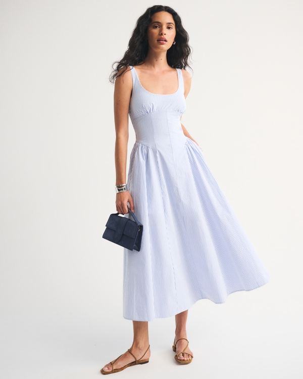
A&F 'Dylan' denim midi — the line's button/tie shirt-dress silhouette typically defines the waist. Structured denim, midi. Verify waist on try-on.
blue stripe
denim midi layers well
View item →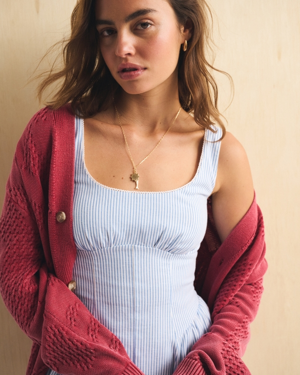
Linen-blend Dylan mini — breathable structured woven in A&F's waist-defining shirt-dress line.
blue stripe
linen — cool-night layer over a tee
View item →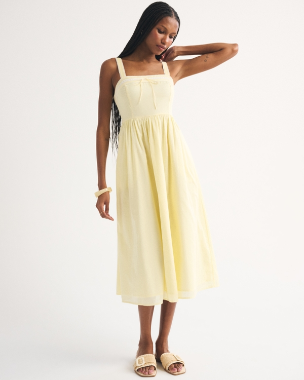
A&F 'Emerson' cotton midi — Emerson is a poplin fit-and-flare; structured cotton, likely defined waist. Could rise to STRONG on verification.
pastel yellow — soft warm
View item →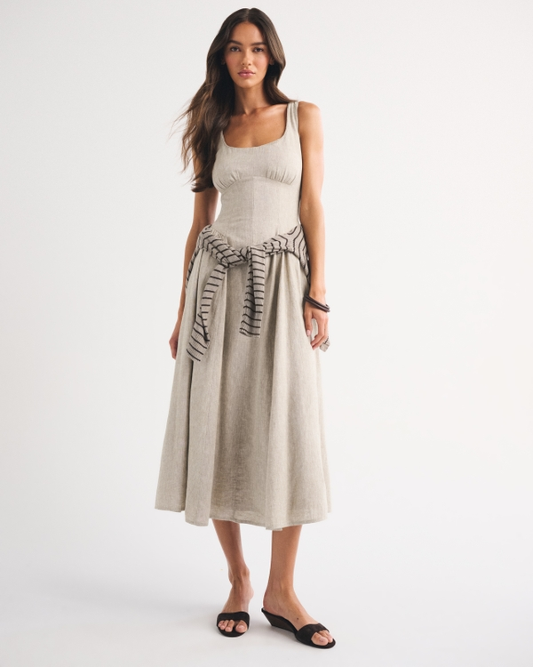
Linen-blend Dylan midi in warm oatmeal — structured breathable woven, waist-defining line.
oatmeal — warm neutral
linen midi, great layering base
View item →Tie-front linen-blend mini — non-wrap waist tie in a structured woven.
white — stark near face, offset warm
View item →Dylan chambray mini — structured denim in the waist-defining Dylan line.
medium pattern
View item →100% cotton Dylan mini in warm brown — structured woven, waist-defining line.
brown — warm, flatters
View item →Button-through front (vertical line) lace-trim mini, brown floral. Button placket helps; verify it's not too flimsy.
brown floral — warm
View item →OK — belt-it / layers — 3
V-neck + vertical button/pintuck detail are right, but verified as an 'easy SHIFT' silhouette — no waist. Belt it. Crepe drapes.
light blue — cool near face
View item →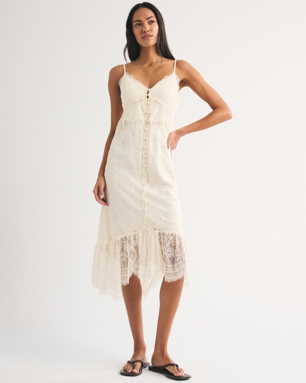
Button-through lace duster midi — an open layering piece, not a waist-defined dress. Useful over the sleeveless picks.
cream
this IS the layer — duster over a slip/tee
View item →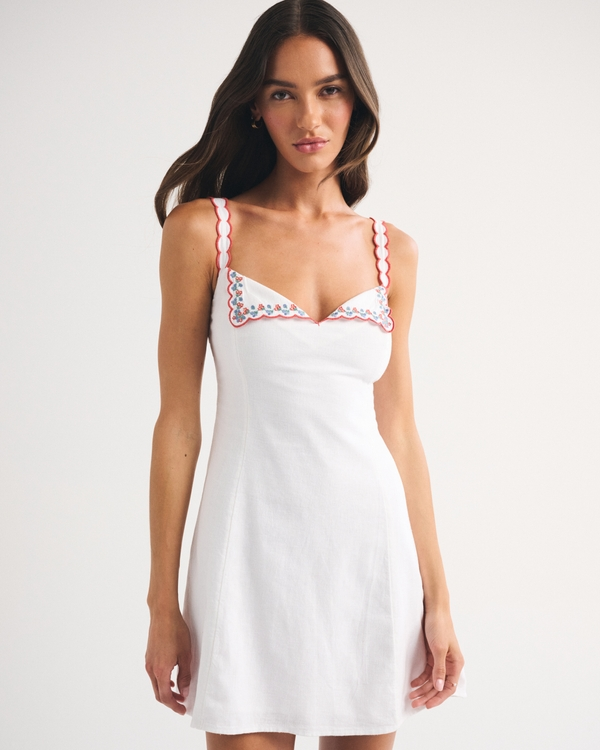
Linen-blend embroidered mini — structured fabric but silhouette/waist unstated; belt-it candidate.
white
View item →OCCASION — 3
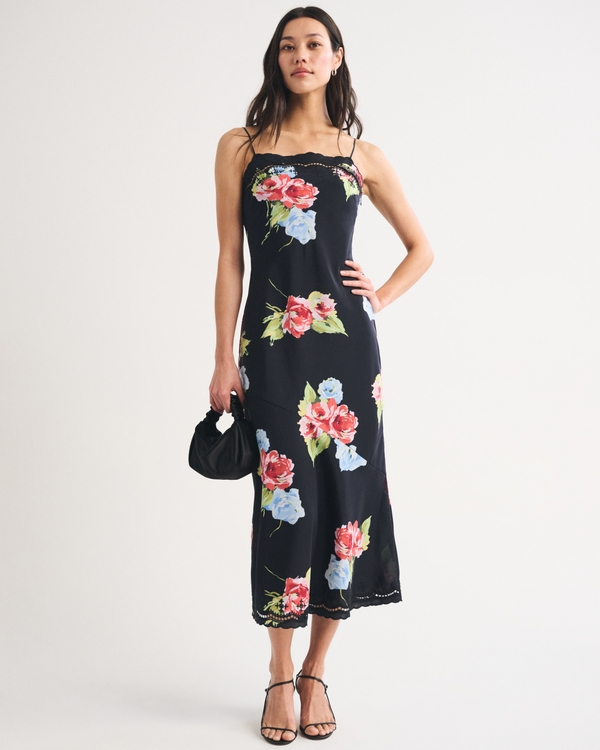
Cotton-silk cutwork slip dress — slip = occasion-only for an apple shape, and cutwork may be unlined.
black floral
View item →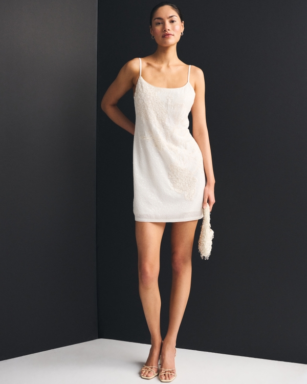
Beaded mini — event piece; verify it has a defined waist before an occasion buy.
white
View item →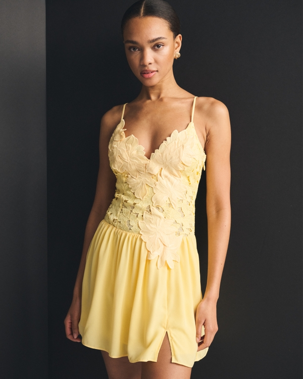
Applique lace mini — dressy/occasion; silhouette unstated.
pastel yellow
View item →